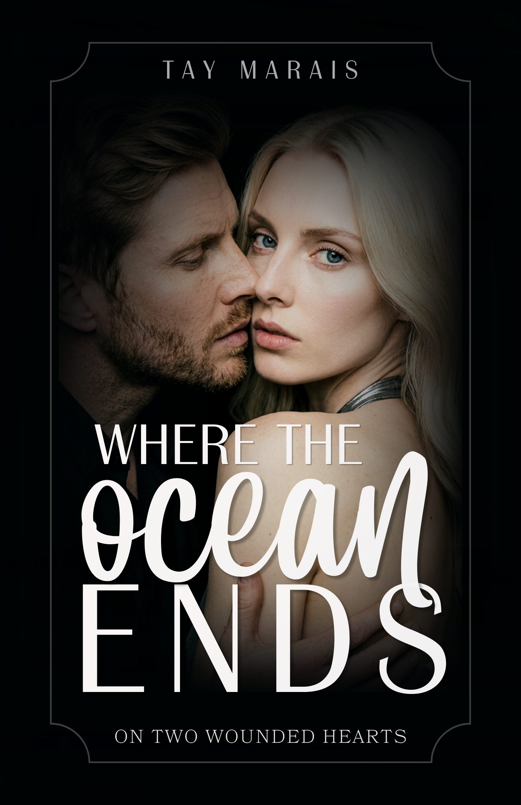

The heavy wooden door slams shut. A beam of light cuts through the dark, muffling the chords of Fleetwood Mac's Dreams. The sound of the latch echoes through the empty bar.
She doesn't enter. She struts in. Stiletto heels click against the worn floorboards. Her bare legs draw the eye up to the hem of her black satin dress, clinging to her body like a second skin.
My posture stiffens. Without turning my neck, I adjust my shoulders, and the stool creaks under my weight. The stained mirror behind the bottles shows the whole scene. The brim of my cap dips an inch, enough to mask the ice-blue of my irises, but not my vision.
Champagne hair falls in waves over her shoulders, a Renaissance painting set against the grit of Los Angeles. Confidence walks in first. She ignores the few stares in the room, not out of arrogance, but out of training.
She walks to the bar and stops two stools away. The air turns heavy, thick with a vanilla scent that doesn't belong to old wood and stale beer. The brim of my cap dips. Stay invisible.
But she turns her face toward the counter light. Invisibility becomes irrelevant. Recognition lands like a punch.
Madeleine. The ghost from Dylan's stories, Thomas's best friend. "Mad" always sounded like a stupid tabloid nickname, until I saw her in person. What the hell is she doing in my sanctuary?
"Madi, what are you doing here?" Magnus's voice breaks her silence.
My jaw clenches. I shift my gaze, studying the amber liquid. I'm an actor. I recognize when someone is acting. And she's delivering the performance of her life.
The old bartender, whose default expression swings between indifference and hostility, breaks into a smile I've never seen on him.
Magnus comes around the counter, wiping his hands on his apron, arms thrown open, embracing the expensive satin and the untouchable woman like she's his own flesh and blood.
"Magnus, it's been too long..." Her answer comes out raspy against his shoulder. A slight crack in her voice that makes me tilt my head.
I shouldn't be listening. But observing human behavior is a vice, and right now, I'm addicted to the scene unfolding beside me.
"Happy birthday!" Magnus pulls back to hold her hands with a familiarity that puts me on edge. "And I'm so sorry, my dear. Your grandfather meant a great deal to me."
The contrast is violent. Congratulations and condolences in the same breath. Madeleine pulls her hands free to fidget with her own finger. Her ring spins. I bring mine to the mark my wedding band left, now just a lighter patch on my skin.
"Merci..." Her tone drops to absolute zero. Cold. Mechanical. A quick defense against crumbling at the mention of Henri Bennett. And it works.
"You've been too busy to stop by, haven't you?" His playful tone tries to soften the heavy air. He gets a quick laugh out of her. "The usual?"
Magnus is already heading back behind the counter, reaching for the glass.
"Yes, please. With lots of ice."
She slides onto the high stool, her posture natural yet sculpted. She sets her designer bag on the dirty counter without a second thought. Close enough to be noticed. Far enough to stay in control.
Every move is choreographed: the upturned nose, the aristocratic disdain, the elegance that screams for no one to get close. But she's hiding a mine in the way she bites her lower lip. Suppressing something that could shatter the mirror between us.
Madeleine Bennett. "L'Ange Blond", Hollywood's blond angel, devoured and spat back out. Child star, prodigy singer, a whole childhood stolen by spotlights. We're both here. Pretending not to be what the world decided we are.
I force my eyes back to the old TV in the corner, trying to find my focus again, but my peripheral vision betrays me.
The first two chapters of Where the Ocean Ends, as a real ebook. EPUB for your Kindle, PDF for anywhere else.
No spam. Just the book, and a note when the next one lands.
Adam Walker has the world at feet, an Oscar on his shelf, and a deafening void in his chest. After a devastating divorce that plastered his personal life across every tabloid cover, the Hollywood star flees into the shadows of Los Angeles in search of anonymity. He wanted to disappear. He just didn't expect to find her.
She is France's "L'Ange Blond". Madeleine Bennett, a prodigy heiress living under the constant, suffocating surveillance of a world that idolizes her but never protected her. With a history of abuse and control, Madeleine hides behind a shield of sharp sarcasm.
What begins as an undeniable physical attraction on her birthday night turns into a dangerous agreement: an escape with no tomorrows. But as the flashing lights of Hollywood pale before the raw honesty of their desire, Adam and Madeleine realize they can no longer pretend.
An observer of human complexity and the intricate nuances of modern relationships. Writing with a deep, compelling, and magnetic voice, Tay explores the bittersweet journey of healing, the boundaries of identity, and the raw search for authenticity in a world of appearances.
Your journey has begun!
Check your inbox.